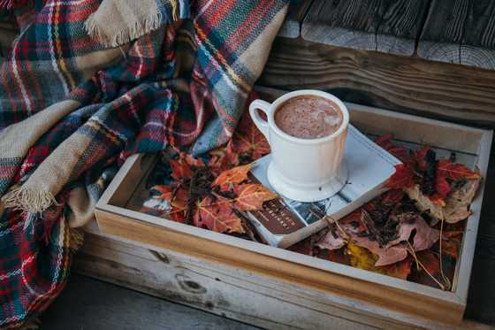
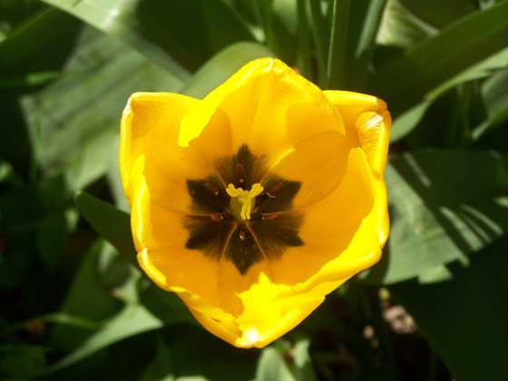
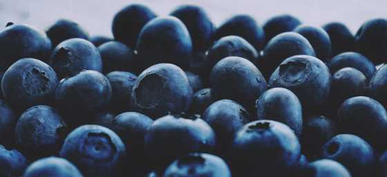
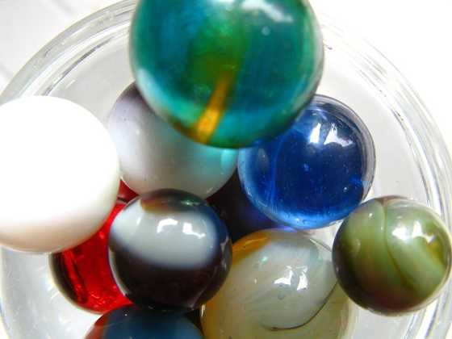
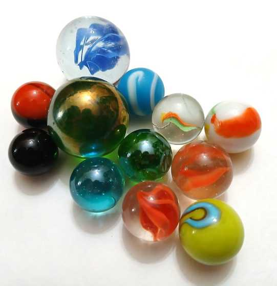
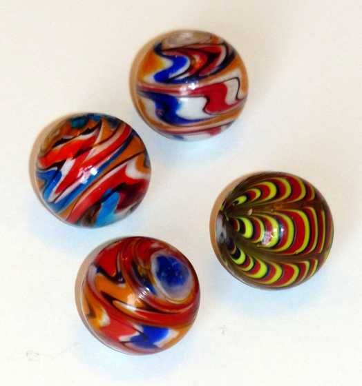
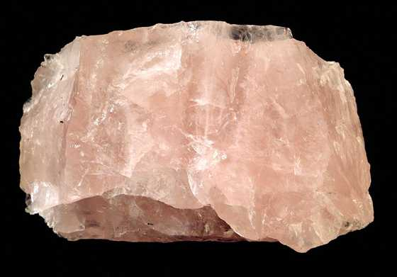
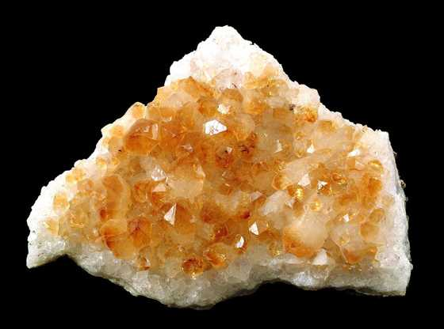

CREATIVE LOUNGE / 富山県南砺市福光
allin
好きを、ぜんぶ詰め込む。あなたの“ソウゾウ”がひらく場所。
カフェ＆アトリエ
ABOUT
お店の由来・想い
allinは、2026年3月20日に福光でオープンしたカフェ＆アトリエです。店主はハンドメイド作家歴15年の「おーりん」さんと紹介されています。
店名の「all in」には「全力を尽くす」という意味が込められ、「好きを詰め込んだ空間」で、自分らしくあること、好きなことに全力で向き合うことに、来店者と一緒に挑戦する場所とされています。キャッチコピーは“Creative Lounge”。店内では店主の作品のほか、作家さんの作品や個展の展示、ワークショップなどのイベントも企画されています。

出典は _notes/plan.md に記録しています。紹介内容は取材記事に基づくもので、最新情報はInstagramでご確認ください。
MENU
メニュー・提供内容
手作りのスイーツと、こだわりのドリンクを楽しめると紹介されています。内容は時期によって変わります。営業時間・定休日・価格などの詳細は準備中です。

気まぐれスイーツ
季節や時期で変わる、手作りスイーツ。

イタリアンプリン・チーズケーキ
紹介記事に登場する定番のスイーツ。

コーヒー・ティー
自家焙煎のこだわりのドリンクと、セレクトティー。
価格・営業時間・定休日: 準備中 / 電話番号: 準備中
MOOD
好きがつまった、イメージ












掲載の写真はすべてフリー素材のイメージで、店舗の実際の様子・商品ではありません。
VOICE
口コミ イメージ例
かわいい作品を眺めながら、ゆっくりスイーツをいただけました。イメージ例
黄色い壁と木のテーブルがあたたかくて、つい長居してしまいそう。イメージ例
ものづくりが好きな人と話せる、居心地のよい場所だと思います。イメージ例
上記は制作側が作成したイメージ例であり、実際のお客様の声ではありません。
写真クレジット
- latte.jpg「The cup of coffee on a wooden table (47939081677)」 Artem Beliaikin / CC BY 2.0
- cupmarble.jpg「Cup of coffee on café table」 Ssu / CC BY-SA 4.0
- macblue.jpg「Macarons on a blue rectangular serving dish, August 2009」 Jeppestown / CC BY-SA 2.0
- macbox.jpg「Des macarons de chez Bouillet (mars 2023)」 Benoît Prieur / CC0 1.0
- tulip.jpg「Yellow tulip - 2006」 A. G. Erdogan / CC0 1.0
- mocha.jpg「Mocha Cake - Djanogly Café, Tate Britain 2026-03-24」 Andy Li / CC0 1.0
- hotchoc.jpg「Hot chocolate (Unsplash)」 Alisa Anton / CC0 1.0
- choco.jpg「Chocolate raspberry dessert」 Funknendai / CC0 1.0
- financier.jpg「Chocolate financier」 Syced / CC0 1.0
- blueberry.jpg「Blueberriessss」 Suzy Hazelwood / CC0 1.0
- bowl.jpg「Marbles in glass」 Glenda Green / CC BY 3.0
- marbles.jpg「Several marbles」 Conrad 7 / CC0 1.0
- swirl.jpg「Glass Marbles」 www.badobadop.co.uk / CC BY-SA 3.0
- rosequartz.jpg「Rose quartz (GeoDIL number - 2521)」 Darla Sondrol / CC0 1.0
- citrine.jpg「Citrine (GeoDIL number - 310)」 Shannon Heinle / CC0 1.0
- wood.jpg「Wood Texture Background」 Bango Textures / CC0 1.0